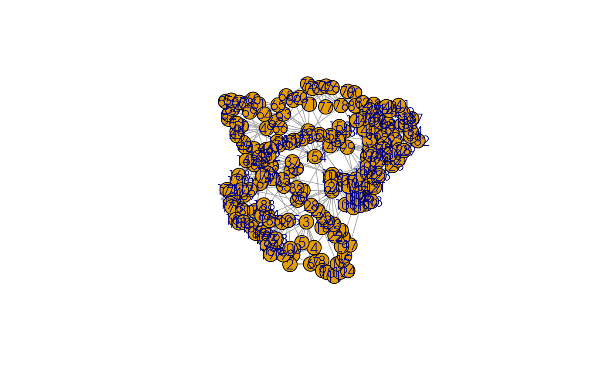
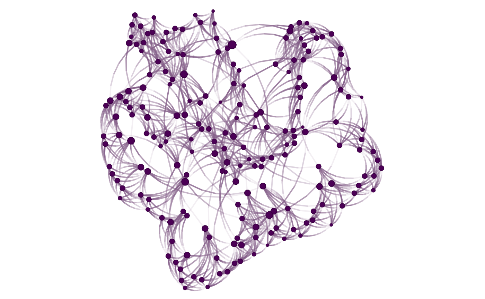

This is a description.
nplot( x, layout, vertex.size = 1, bg.col = "transparent", vertex.nsides = 10, vertex.color = grDevices::hcl.colors(1), vertex.size.range = c(0.01, 0.03, 4), vertex.frame.color = NULL, vertex.rot = 0, vertex.frame.prop = 0.2, vertex.label = NULL, vertex.label.fontsize = NULL, vertex.label.color = adjustcolor("black", alpha.f = 0.8), vertex.label.fontfamily = "sans", vertex.label.fontface = "plain", vertex.label.show = 0.3, vertex.label.range = c(5, 15), edge.width = 1, edge.width.range = c(1, 2), edge.arrow.size = NULL, edge.color = ~ego(alpha = 0.1, col = "gray") + alter, edge.curvature = pi/3, edge.line.lty = "solid", edge.line.breaks = 5, sample.edges = 1, skip.vertex = FALSE, skip.edges = FALSE, skip.arrows = skip.edges, add = FALSE, zero.margins = TRUE, edgelist ) # S3 method for igraph nplot( x, layout = igraph::layout_nicely(x), vertex.size = igraph::degree(x, mode = "in"), bg.col = "transparent", vertex.nsides = 10, vertex.color = grDevices::hcl.colors(1), vertex.size.range = c(0.01, 0.03, 4), vertex.frame.color = NULL, vertex.rot = 0, vertex.frame.prop = 0.2, vertex.label = igraph::vertex_attr(x, "name"), vertex.label.fontsize = NULL, vertex.label.color = adjustcolor("black", alpha.f = 0.8), vertex.label.fontfamily = "sans", vertex.label.fontface = "plain", vertex.label.show = 0.3, vertex.label.range = c(5, 15), edge.width = igraph::edge_attr(x, "weight"), edge.width.range = c(1, 2), edge.arrow.size = NULL, edge.color = ~ego(alpha = 0.1, col = "gray") + alter, edge.curvature = pi/3, edge.line.lty = "solid", edge.line.breaks = 5, sample.edges = 1, skip.vertex = FALSE, skip.edges = FALSE, skip.arrows = !igraph::is_directed(x), add = FALSE, zero.margins = TRUE, edgelist ) # S3 method for network nplot( x, layout = sna::gplot.layout.kamadakawai(x, NULL), vertex.size = sna::degree(x, cmode = "indegree"), bg.col = "transparent", vertex.nsides = 10, vertex.color = grDevices::hcl.colors(1), vertex.size.range = c(0.01, 0.03, 4), vertex.frame.color = NULL, vertex.rot = 0, vertex.frame.prop = 0.2, vertex.label = network::get.vertex.attribute(x, "vertex.names"), vertex.label.fontsize = NULL, vertex.label.color = adjustcolor("black", alpha.f = 0.8), vertex.label.fontfamily = "sans", vertex.label.fontface = "plain", vertex.label.show = 0.3, vertex.label.range = c(5, 15), edge.width = 1, edge.width.range = c(1, 2), edge.arrow.size = NULL, edge.color = ~ego(alpha = 0.1, col = "gray") + alter, edge.curvature = pi/3, edge.line.lty = "solid", edge.line.breaks = 5, sample.edges = 1, skip.vertex = FALSE, skip.edges = FALSE, skip.arrows = !network::is.directed(x), add = FALSE, zero.margins = TRUE, edgelist ) # S3 method for matrix nplot( x, layout, vertex.size = 1, bg.col = "transparent", vertex.nsides = 10, vertex.color = grDevices::hcl.colors(1), vertex.size.range = c(0.01, 0.03, 4), vertex.frame.color = NULL, vertex.rot = 0, vertex.frame.prop = 0.2, vertex.label = NULL, vertex.label.fontsize = NULL, vertex.label.color = adjustcolor("black", alpha.f = 0.8), vertex.label.fontfamily = "sans", vertex.label.fontface = "plain", vertex.label.show = 0.3, vertex.label.range = c(5, 15), edge.width = 1, edge.width.range = c(1, 2), edge.arrow.size = NULL, edge.color = ~ego(alpha = 0.1, col = "gray") + alter, edge.curvature = pi/3, edge.line.lty = "solid", edge.line.breaks = 5, sample.edges = 1, skip.vertex = FALSE, skip.edges = FALSE, skip.arrows = skip.edges, add = FALSE, zero.margins = TRUE, edgelist ) # S3 method for default nplot( x, layout, vertex.size = 1, bg.col = "transparent", vertex.nsides = 10, vertex.color = grDevices::hcl.colors(1), vertex.size.range = c(0.01, 0.03, 4), vertex.frame.color = NULL, vertex.rot = 0, vertex.frame.prop = 0.2, vertex.label = NULL, vertex.label.fontsize = NULL, vertex.label.color = adjustcolor("black", alpha.f = 0.8), vertex.label.fontfamily = "sans", vertex.label.fontface = "plain", vertex.label.show = 0.3, vertex.label.range = c(5, 15), edge.width = 1, edge.width.range = c(1, 2), edge.arrow.size = NULL, edge.color = ~ego(alpha = 0.1, col = "gray") + alter, edge.curvature = pi/3, edge.line.lty = "solid", edge.line.breaks = 5, sample.edges = 1, skip.vertex = FALSE, skip.edges = FALSE, skip.arrows = skip.edges, add = FALSE, zero.margins = TRUE, ..., edgelist ) # S3 method for netplot print(x, y = NULL, newpage = TRUE, legend = TRUE, ...)
| x | A graph. It supports networks stored as |
|---|---|
| layout | Numeric two-column matrix with the graph layout in x/y positions of the vertices. |
| vertex.size | Numeric vector of length |
| bg.col | Color of the background. |
| vertex.nsides | Numeric vector of length |
| vertex.color | Vector of length |
| vertex.size.range | Numeric vector of length 3. Relative size for the
minimum and maximum of the plot, and curvature of the scale. The third number
is used as |
| vertex.frame.color | Vector of length |
| vertex.rot | Vector of length |
| vertex.frame.prop | Vector of length |
| vertex.label | Character vector of length |
| vertex.label.fontsize | Numeric vector. |
| vertex.label.color | Vector of colors of length |
| vertex.label.fontfamily | Character vector of length |
| vertex.label.fontface | See grid::gpar |
| vertex.label.show | Numeric scalar. Proportion of labels to show as the
top ranking according to |
| vertex.label.range | Numeric vector of size 2 or 3. Relative scale of
|
| edge.width | Vector of length |
| edge.width.range | Vector of length |
| edge.arrow.size | Vector of length |
| edge.color | A vector of length |
| edge.curvature | Numeric vector of length |
| edge.line.lty | Vector of length |
| edge.line.breaks | Vector of length |
| sample.edges | Numeric scalar between 0 and 1. Proportion of edges to sample. |
| skip.vertex, skip.edges, skip.arrows | Logical scalar. When |
| add | Logical scalar. |
| zero.margins | Logical scalar. |
| edgelist | An edgelist. |
| y, ... | Ignored |
| newpage | Logical scalar. When |
| legend | Logical scalar. When |
An object of class c("netplot", "gTree", "grob", "gDesc"). The object
has an additional set of attributes:
.xlim, .ylim vector of size two with the x-asis/y-axis limits.
.layout A numeric matrix of size vcount(x) * 2 with the vertices positions
.edgelist A numeric matrix, The edgelist.
In the case of nplot.default, an object of class netplot and grob (see
grid::grob) with the following slots:
children The main grob of the object.
name Character scalar. The name of the plot
.xlim and .ylim Two vectors indicating the limits of the plot
.layout A two-column matrix with the location of the vertices.
.edgelist A two-column matrix, an edgelist.
.N Integer. The number of vertices.
.M Integer. The number of edges.
The children grob contains the following two objects:
background a grob rectangule.
graph a gTree that contains each vertex and each edge
of the figure.
When x is of class matrix, it will be passed to igraph::graph_from_adjacency_matrix().
In the case of edge.color, the user can specify colors using netplot-formulae.
library(igraph) library(netplot) set.seed(1) x <- sample_smallworld(1, 200, 5, 0.03) plot(x) # ala igraphnplot(x) # ala netplot